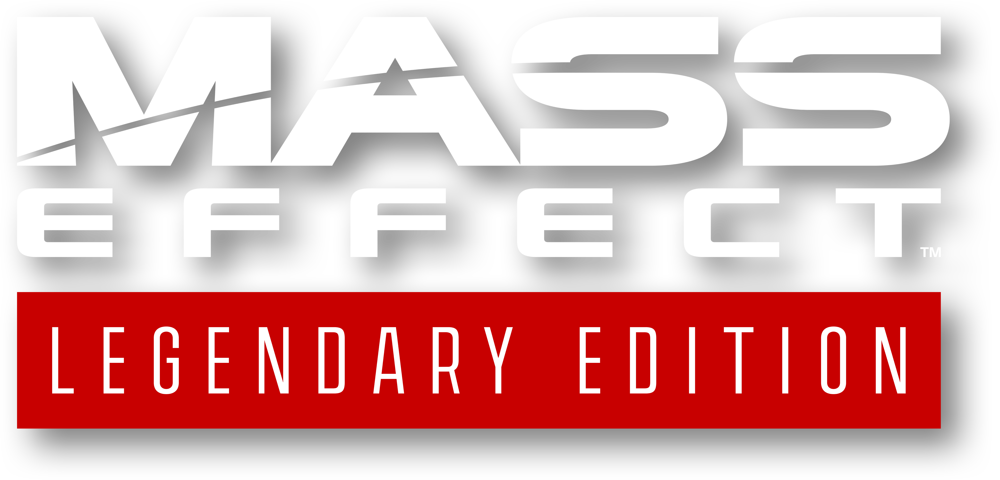

Mass Effect™ Édition Légendaire
Retour aux Aventures programmées
La Guilde s'élance aux confins de la galaxie, où le destin des civilisations repose entre les mains d'un équipage prêt à affronter une menace venue de l'aube des temps.
📜 Informations de l'expédition
Origine : Aventure principale 🏆
Statut : Cartographiée 🗺️
📅 Début : À définir
🎮 Type : RPG / Action / Science-fiction / Exploration
👥 Participants : MK
📖 Histoire de l'aventure
Dans un futur où l'humanité a rejoint une communauté galactique de civilisations extraterrestres, le commandant Shepard découvre l'existence d'une menace capable d'anéantir toute vie évoluée.
Derrière cette découverte se dessine le retour imminent des Moissonneurs, d'anciennes machines déterminées à détruire les civilisations de la galaxie.
Au fil de trois grandes aventures, Shepard devra réunir un équipage fidèle, nouer des alliances entre des peuples aux intérêts opposés et prendre des décisions qui façonneront le destin de la galaxie.
De la découverte de la menace à la guerre finale, chaque choix pourra avoir des conséquences durables.
🎯 Objectifs de l'expédition
- 🚀 Explorer la galaxie et découvrir ses secrets
- 🤝 Rassembler des alliés et bâtir une équipe de confiance
- 🌌 Protéger les civilisations galactiques face aux Moissonneurs